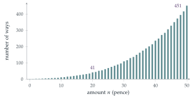

STEP I 1997, Question 1
Read the question before you go on. It is in the STEP Support Programme’s question database: step.maths.org/questions/97-s1-q1
The hook
This looks like the easiest question in the book: just list the possibilities. But listing gets out of hand very quickly. There are \(41\) ways to make \(20\)p, \(451\) ways to make \(50\)p, and \(4563\) ways to make £1 from the coins in a British pocket. The question is really asking for a system, a way to organise the count so that nothing is missed and nothing counted twice.
Behind the system is a beautiful piece of mathematics. Each coin corresponds to a geometric series, the number of ways to make \(n\) pence is a coefficient in their product, and the same idea, applied to all whole numbers at once, gives Euler’s theory of partitions, one of the deepest topics in number theory.
Before you start
How many ways are there to make \(n\) pence using only \(2\)p and \(1\)p coins? Why does the answer depend only on how many \(2\)p coins you use?
Once the number of \(2\)p coins is chosen, the rest must be \(1\)p coins, so there is exactly one way for each possible number of \(2\)p coins: \(0, 1, \ldots, \lfloor n/2\rfloor\). That gives \(\lfloor n/2\rfloor + 1\) ways. Call this \(a(n)\). For example, \(a(10) = 6\) and \(a(5) = 3\).
Working it through
Stage 1 Ten pence
Organise the count by the largest coins. How many \(10\)p coins can you use? Given that, how many \(5\)p coins?
One \(10\)p coin: \(1\) way.
No \(10\)p, two \(5\)p: \(1\) way.
No \(10\)p, one \(5\)p: the other \(5\)p is made from \(2\)p and \(1\)p, in \(a(5) = 3\) ways.
No \(10\)p or \(5\)p: \(10\)p from \(2\)p and \(1\)p, in \(a(10) = 6\) ways.
The total is \(1 + 1 + 3 + 6 = 11\).■
Stage 2 Building up layer by layer
Let \(b(n)\) be the number of ways to make \(n\) pence from \(5\)p, \(2\)p and \(1\)p coins. How can you express \(b(n)\) using the function \(a\)?
Choose the number \(k\) of \(5\)p coins; the remaining \(n - 5k\) pence are made from \(2\)p and \(1\)p coins. So \[b(n) = a(n) + a(n - 5) + a(n - 10) + \cdots.\] This gives
| \(n\) | \(0\) | \(5\) | \(10\) | \(15\) | \(20\) |
|---|---|---|---|---|---|
| \(a(n)\) | \(1\) | \(3\) | \(6\) | \(8\) | \(11\) |
| \(b(n) = a(n) + b(n - 5)\) | \(1\) | \(4\) | \(10\) | \(18\) | \(29\) |
Similarly, let \(c(n)\) count ways using \(10\)p coins as well; then \(c(n) = b(n) + b(n - 10) + \cdots\), so \(c(10) = 10 + 1 = 11\) (agreeing with Stage 1) and \(c(20) = b(20) + b(10) + b(0) = 29 + 10 + 1 = 40\).
Stage 3 Twenty pence
Finally the \(20\)p coin: either we use it (one way) or we do not (\(c(20)\) ways). So there are \[40 + 1 = 41 \text{ ways}. \qed\]
Notice the structure: each new coin adds a layer, and each layer is a sum of the previous layer at spacings of the new coin’s value. Can you see how a computer would carry out this calculation for £1, or £100?
Looking back
Organise by the largest part. Fixing the number of the largest coins first made the count systematic.
Build a table. Each new coin added a row computed from the row before. This is dynamic programming, the standard way computers count such things.
Check against a known case. The table reproduced the \(11\) ways for \(10\)p.
What’s really going on
Coins as geometric series
Here is the idea that turns this into algebra. The number of \(5\)p coins used can be \(0, 1, 2, \ldots\), contributing \(0, 5, 10, \ldots\) pence. Record this as the series \[1 + x^5 + x^{10} + x^{15} + \cdots = \frac{1}{1 - x^5}.\] Do the same for each coin and multiply: \[\frac{1}{(1 - x)(1 - x^2)(1 - x^5)(1 - x^{10})(1 - x^{20})} = \sum_n w(n)x^n.\] When the brackets are multiplied out, each term \(x^n\) arises from choosing one term from each bracket, that is, a number of each coin, with total value \(n\). So \(w(n)\), the coefficient of \(x^n\), is exactly the number of ways to make \(n\) pence. The table in Stage 2 was simply multiplying out this product one bracket at a time. This is the generating function idea of Section 9.4, and multiplication is where it shows its power: products of generating functions count combinations of choices.

Partitions
What if every whole number is allowed as a coin? Then the number of ways to write \(n\) as a sum of positive integers, ignoring order, is the partition number \(p(n)\). For example \(p(4) = 5\), since \(4 = 3 + 1 = 2 + 2 = 2 + 1 + 1 = 1 + 1 + 1 + 1\). Euler saw in 1748 that \[\sum_{n \geq 0}p(n)x^n = \frac{1}{(1 - x)(1 - x^2)(1 - x^3)(1 - x^4)\cdots},\] and used it to discover remarkable identities. One of them: the number of ways to write \(n\) as a sum of distinct parts equals the number of ways to write it as a sum of odd parts. (The proof is a single line of algebra with generating functions: try it in the exercises.)
The partition numbers grow fast: \(p(10) = 42\), \(p(100) = 190\,569\,292\). In 1918 G. H. Hardy and Srinivasa Ramanujan found an astonishing formula for \(p(n)\), an infinite series whose first term is \[p(n) \approx \frac{1}{4n\sqrt3}\,e^{\pi\sqrt{2n/3}}.\] To test it, Percy MacMahon computed \(p(200) = 3\,972\,999\,029\,388\) by hand, using Euler’s identities. The first few terms of Hardy and Ramanujan’s series gave the right answer to within a fraction of one. Ramanujan also discovered that \(p(5n + 4)\) is always divisible by \(5\), \(p(7n + 5)\) by \(7\), and \(p(11n + 6)\) by \(11\). Explaining why there are no more such patterns took until the twenty-first century.
The thinking skill
When an object is built from independent choices, each choice is a factor, and the number of objects of total size \(n\) is the coefficient of \(x^n\) in the product.
This turns counting into algebra. At university it is the basis of enumerative combinatorics, and it is how probability generating functions handle sums of independent random variables.
Try this next
Two kinds of six. (From STEP II, 2012.) Show that the coefficient of \(x^{24}\) in \((1 - x^6)^{-2}(1 - x^3)^{-1}\) is \(15\), and find the coefficient of \(x^n\) in general. Then show that the coefficient of \(x^{24}\) in \((1 - x^6)^{-2}(1 - x^3)^{-1}(1 - x)^{-1}\) is \(55\), and find the coefficients of \(x^{25}\) and \(x^{66}\). Describe a coin-counting problem that these coefficients answer.
Distinct and odd. Show that \((1 + x)(1 + x^2)(1 + x^3)\cdots\) is the generating function for partitions into distinct parts. Use \(1 + x^k = \frac{1 - x^{2k}}{1 - x^k}\) to show that it equals \(\frac{1}{(1 - x)(1 - x^3)(1 - x^5)\cdots}\), and deduce Euler’s theorem. Check it for \(n = 6\).
A formula. Show that the number of ways to make \(n\) pence using only \(1\)p, \(2\)p and \(5\)p coins is the nearest integer to \(\frac{(n + 4)^2}{20}\). (Check it first for small \(n\).)
Order matters. In how many ways can you make \(n\) pence by putting \(1\)p and \(2\)p coins into a slot one at a time, if the order matters? (You have met this sequence before.)
Further reading
George Andrews & Kimmo Eriksson, Integer Partitions (Cambridge University Press). A short, readable introduction for undergraduates.
George Pólya, “On picture-writing”, American Mathematical Monthly 63 (1956). Pólya’s classic explanation of generating functions using the problem of changing a dollar (there are \(292\) ways).
Robert Kanigel, The Man Who Knew Infinity (Abacus). The life of Ramanujan, and his partnership with Hardy.